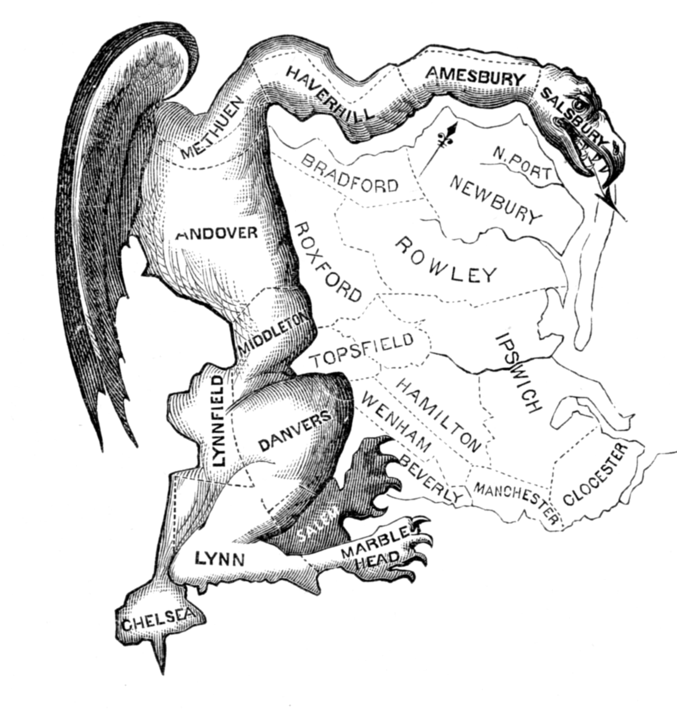

Choose two maps to be displayed.
To choose a new map, uncheck a currently selected map and recheck a new map.
Choose one variable to symbolize the maps.
This website is designed to help people understand how different goals of redistricting
can be in tension with each other. Here, we focus on two common redistricting criteria, compactness
and efficiency gap, while introducing a third criteria based on community flows, which we call
modularity.
Below, we present a brief background on redistricting, and describe
how each of the metrics seen in the map above are calculated.
In representative democracies, gerrymandering the political manipulation
of electoral district boundaries with the intent of creating undue advantage
for a party, group, or socio-economic class within the constituency.
The manipulation may consist of "cracking" (diluting the voting power of the
opposing party's supporters across many districts) or "packing" (concentrating
the opposing party's voting power in one district to reduce their voting power
in other districts)
The term gerrymandering is named after American politician Elbridge Gerry,
Vice President of the United States at the time of his death, who, as
Governor of Massachusetts in 1812, signed a bill that created a partisan
district in the Boston area that was compared to the shape of a mythological
salamander. The term has negative connotations and gerrymandering is almost
always considered a corruption of the democratic process. The resulting
district is known as a gerrymander The word is also a verb for the process.
Text and image are provided by Wikipedia:
https://en.wikipedia.org/wiki/Gerrymandering
The following sections describe each metric and how they are calculated.
A communitiy is a group of people that have more in common with each other, on average, than they do with
people from another group. Redistricting groups people across geographic space, and therefore can either split
communities or keep them intact.
Redistricting laws in many states have explicit preferences for redistricting plans that follow existing boundaries,
such as county lines, which implicitly encourages communities to be kept intact. Frequently, in legal challenges
to gerrymandered districts, split municipalities are shown as evidence that natural communities were split
in order to gain partisan advantage.
Communities of interest and majority-minority districts are two explicit ways of keeping particular communities intact,
and both function by keeping groups of people with common policy concerns in a single district. For communities of interest,
people from such a group self identify and advocate for being kept in a single interest so that they can elect a representative
that will represent their particular interests. Majority-minority districts are similar, though they are required by the
Voting Rights Act so as to not "improperly dilute minorities voting power."
None of these community formations, however, attempt to maintain communities across all districts.
Framed as an optimization problem, we might ask how we could make districts such that we maintain as many communities
as possible within each district, such that we minimize community splitting across all districts. While optimization
is redistricting is notoriously difficult, we attempt here to show at least what a range of possibilities might look like
if such a metric were incorporated into redistricting law.
For such an optimization, we need both a formula for defining community strength, and a measurement to use in that formula.
For the measurement, we employ human mobility flows from Safegraph. The mobility flows consist of anomymized cellphone counts
that have moved from one census block group to another during a given time span. To quantify community strength, we use
modularity, which is freqeuntly used in community detection research. Modularity here is defined as the sum of district intra flow
divided by the sum of district inter flows, where intra flows are mobility flows originating in one district and ending in that same
district, while inter flows are mobility flows originating in one district and ending in another. By summing across all districts
to calculate modularity, we can get a sense of how the districting plan, as a whole, keeps communties intact.